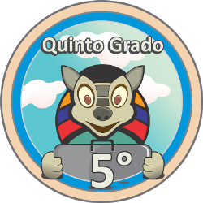

¡Amiguitos y Amiguitas! Tatu Hú te da la bienvenida al Mini Aula Virtual donde vamos a aprender acerca de la
Gestión de Riesgos e Inundaciones
Grados
Mini Aula Tatu Hú

Selecciona tu grado
5to Grado
-
6to Grado
Conoce a Tatu Hú